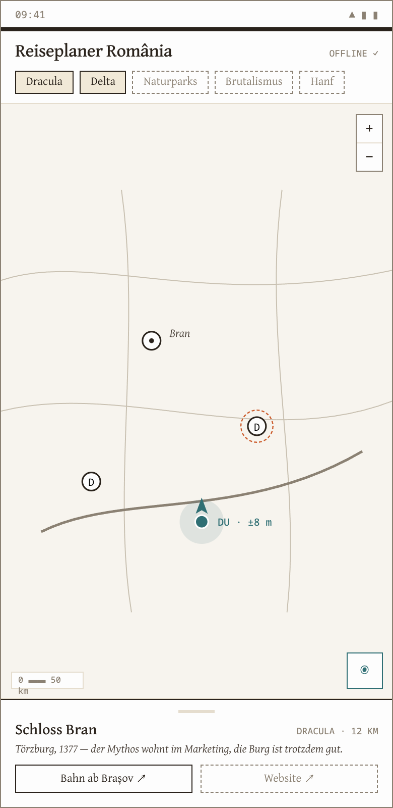

Vier Kapitel bis zur Entscheidung
Die teure Hälfte ist bezahlt
Der Rumänien-Atlas: Kartenblätter von Physisch bis Wirtschaft, ein Signaturenkatalog nach Diercke-Vorbild, Geodaten als saubere Module.
Der komplette QGIS-Stil der Marke: Symbolbibliothek, Layerstile, Palette — Druck und App sprechen dieselbe Sprache.
Eine laufende eigene QFieldCloud-Instanz — Verteilung und Updates kosten keinen Dienstleister.
Sieben Themen, ein Reiseführer
Die Karte ist die App
Themen als Chips über der Karte — an, aus, fertig. Der eigene Standort läuft als Marker mit Kompassnadel mit.
Ein POI öffnet ein Bottom-Sheet: Beschreibung, Website, und der Bahn-Deep-Link ab dem nächsten Bahnhof.


Ebenen wie im Atlas
Jedes Thema ist ein Layer mit seiner Atlas-Signatur — was auf dem Papier gilt, gilt auf dem Bildschirm.
Die Tab-Leiste trägt den Sync: neue POI kommen über die eigene QFieldCloud, ohne Kabel, ohne Store-Update.
Eine Datenquelle, zwei Ausgaben
Wer die Karte pflegt, pflegt die App gleich mit — es gibt keinen zweiten Datenbestand.
Die eigene QFieldCloud macht den Vertrieb
Projekt einmal packen: Layer, Stile, Offline-Basiskarte auf Rumänien beschnitten.
Jedes Gerät zieht das Projekt aus der eigenen Instanz — kein App-Store, keine Fremd-Cloud.
Neue POI oder korrigierte Links: einmal einspielen, alle Geräte syncen beim nächsten WLAN.
Bahn-Auskunft: GTFS rein, Deep-Link raus
Die App bleibt offline — den Fahrplan rechnet der Browser des Reisenden, nicht wir.
Empfehlung: QField zuerst, Web später
Offline im Delta und auf dem Pass, GPS + Kompass eingebaut, Verteilung über die eigene Cloud, null Lizenzkosten. Der Reiseführer funktioniert dort, wo kein Netz ist — genau da will man hin.
Gleiche Daten als Leaflet-Begleiter fürs Teilen und für Live-Abfahrten (GTFS-RT). Lohnt, sobald der Pilot steht — nicht davor.